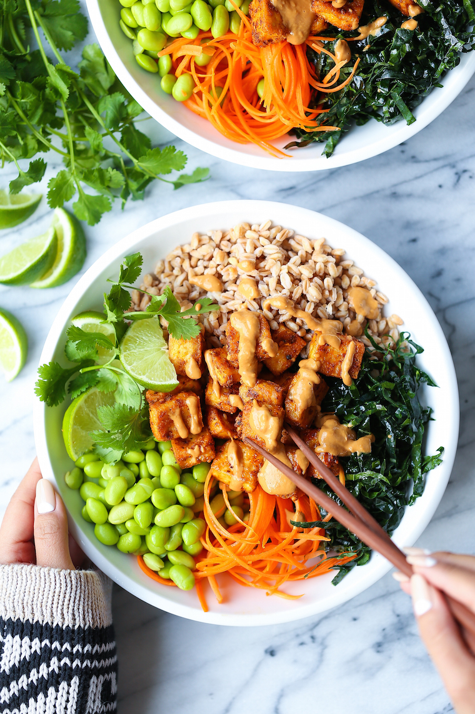

TofuBowl Recipe

This easy to make meal should be ready within 15-20 mins. Great for a easy dinner with minimal cleanup.
Tofu Bowl Ingrediants
Bowl Ingrediants
- 1 cup of extra firm Tofu
- 2 1/2 tbsp cornstarch
- 2 cups panko crumbs
- 1 tsp salt
- 1/2 tsp black pepper
- 1/2 tsp garlic powder
- 1 tbsp olive oil
- 1 cup jasmin rice
- 1 cucumber
- 1 cup cilantro
- 1 lime
Sauce Ingrediants
- 1/2 cup Kinders Teriyaki Sauce
- 1/3 cup Spicy Chili Sauce
Instructions
- Place water in a pot to boil
- Cut all vegetables on a cutting board and leave to the side.
- Cook rice
- Pat down tofu with paper towel to remove extra moisture, place cornstarch and panko crumbs in seperate bowls and cover tofu in cornstrch and panko.
- Cook tofu in a non stick pan. Place in bowl to the side once finished
- Place rice in a bowl once done cooking and top with vegetables, tofu, and seasonings
- Mix together Kinders Teriyaki Sauce and Chili Sauce. Drizzle sauce over bowl
ENJOY!
Home Page